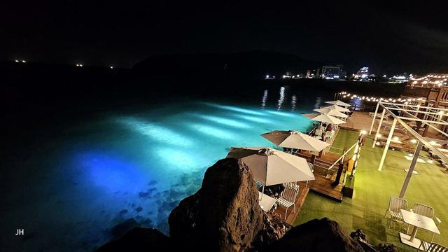
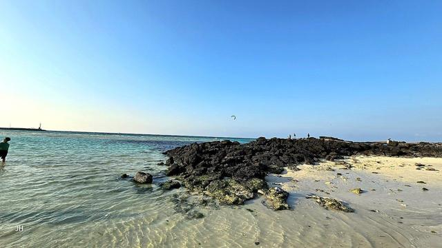
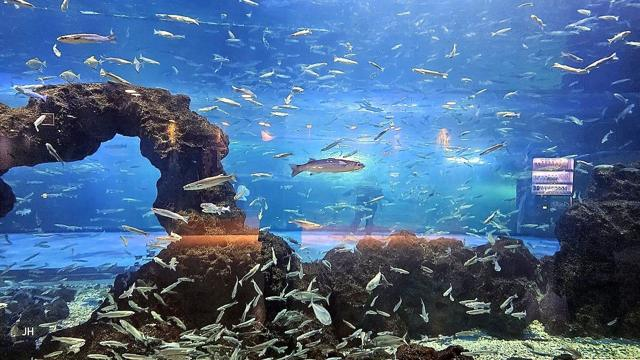
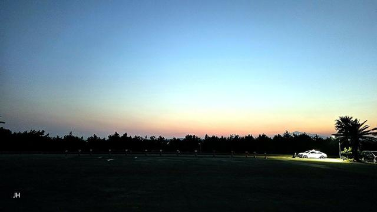
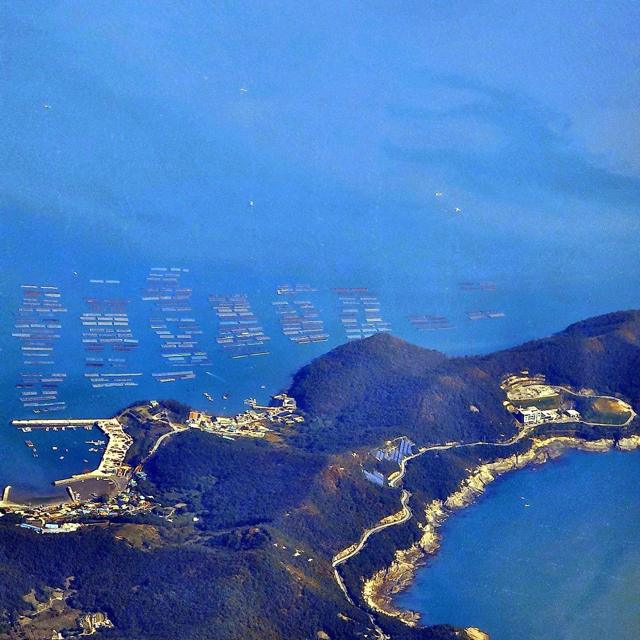
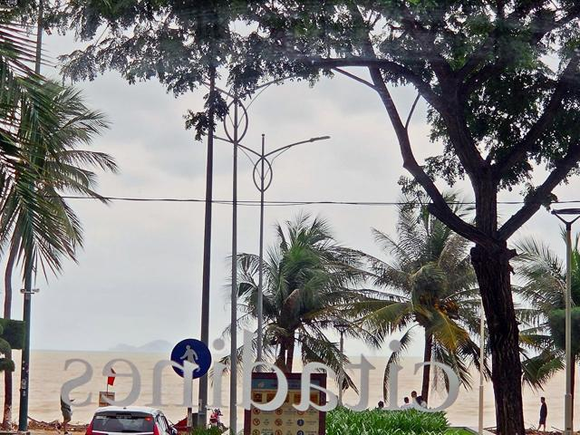
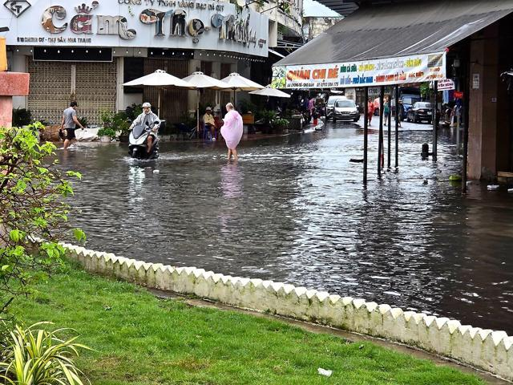
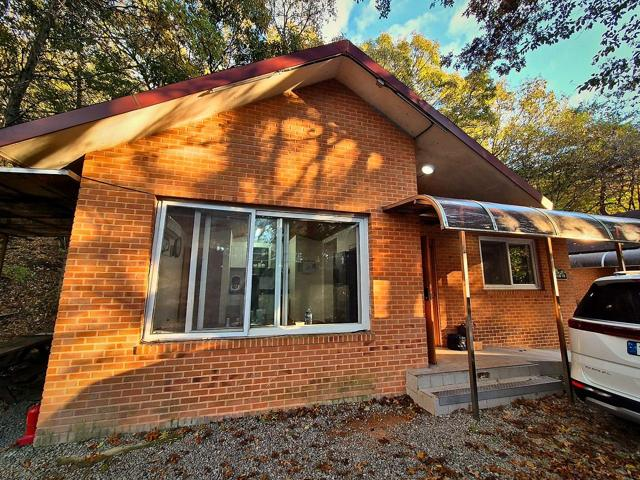

함덕 밤바다 산책 — 조명 켜진 해변과 바위함덕 밤바다 산책 — 조명 켜진 해변과 바위
2026. 11. 16. 21:10제주 여행

함덕 밤바다 산책 — 조명 켜진 해변과 바위2026. 11. 16. 21:10제주 여행

김녕 해변 오후, 하얀 모래와 검은 돌2026. 11. 12. 15:40제주 여행

아쿠아플라넷 대형 수조, 돌 아치 사이 물고기 떼2026. 11. 9. 17:05제주 여행

해 질 녘 바다 하늘, 주황에서 남색으로2026. 11. 5. 18:12제주 여행

비행기 창으로 내려다본 바다와 해안선2026. 11. 2. 09:30제주 여행

나트랑 해변 길, 야자수 사이로 보이는 바다2026. 10. 29. 10:20해외 여행

비 오는 나트랑 거리, 물에 잠긴 골목2026. 10. 26. 16:45해외 여행

옥화자연휴양림 숲속의 집, 낙엽 쌓인 오후2026. 10. 22. 15:10국내 여행